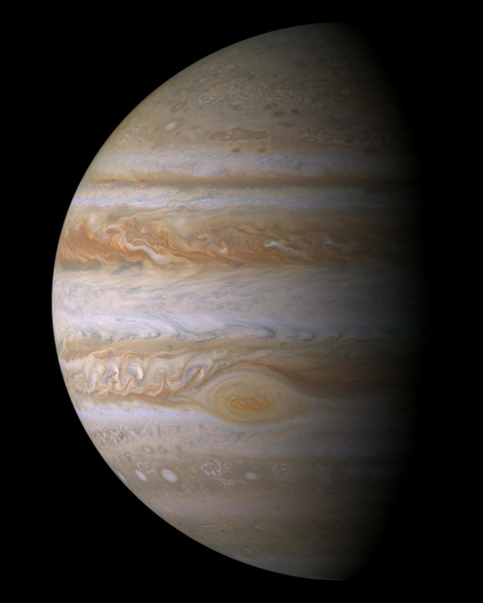
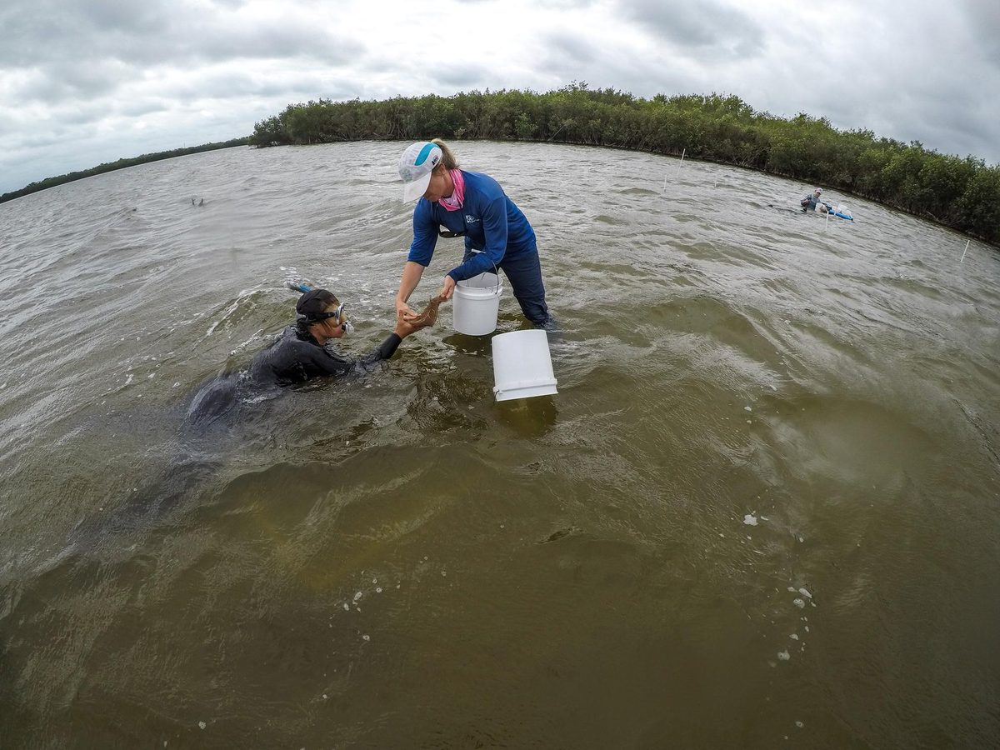

עובדות מדהימות שחשובות
המספרים שמאחורי העבודה. לכל עובדה מצורף מקור.
באנר: הרכבה של תמונות NASA — שקיעת כדור הארץ מ-Orion (Artemis II), השדה העמוק הקיצוני של האבל (NASA/ESA), נפטון בעין Voyager 2 (NASA/JPL)
כל העובדות
1.4 טרה-בייט ביום

תמונה: NASA/Sydney Rohde
טלסקופ החלל Roman של NASA שולח הביתה 1.4 טרה-בייט של נתונים ביום, הכי הרבה מכל משימת אסטרופיזיקה של NASA עד כה.
מתוך: טלסקופ החלל Roman (NASA)
מקור: NASA, Roman launch release
בטוח פי 150

תמונה: NASA
הכניסה המחודשת המסויעת, הראשונה מסוגה, של הלוויין Aeolus של ESA הפחיתה פי 150 את הסיכון, הנמוך ממילא, מפסולת נופלת.
מתוך: הכניסה המסויעת של Aeolus (ESA)
מקור: ESA, Final images before Aeolus demise
49 יעפים ליד ירח של אוקיינוס

תמונה: NASA/JPL-Caltech
Europa Clipper של NASA יעבור 1.8 מיליארד מייל אל צדק ויחלוף 49 פעמים ליד אירופה, ירח עם אוקיינוס.
מתוך: Europa Clipper (NASA)
מקור: NASA, Europa Clipper
קורונוגרף שאף פעם לא ממצמץ

תמונה: NASA/KSC
CCOR-1 של GOES-19 הוא הקורונוגרף המבצעי הראשון בעולם בחלל, והוא מצלם את העטרה החיוורת של השמש כל 15 דקות.
מתוך: GOES-19 ו-CCOR-1 (NOAA)
מקור: NOAA SWPC, CCOR-1 coronagraph
מדבר מזין יער גשם

תמונה: מרכז טיסות החלל גודארד של NASA
כ-27.7 מיליון טונות של אבק סהרה נופלים על האמזונס מדי שנה, מספיק כדי למלא 104,908 משאיות סמיטריילר.
מתוך: אבק הסהרה מזין את האמזונס
מקור: NASA, Saharan dust feeds the Amazon
תריסר פוטונים חוזרים הביתה

תמונה: NASA/Bill Ingalls
הלייזר של ICESat-2 יורה 10,000 פולסים בשנייה, בכל אחד כ-300 טריליון פוטונים, ורק כתריסר מהם חוזרים ללוויין.
מתוך: ICESat-2 (NASA)
מקור: NASA, ICESat-2
יער שמייצר גשם

תמונה: NASA (ISS013-E-74843)
עצי האמזונס מתחילים את עונת הגשמים שלהם חודשיים עד שלושה לפני שהגשמים שמגיעים מהאוקיינוס מגיעים.
מתוך: האמזונס יוצר את עונת הגשמים של עצמו
מקור: NASA JPL, the Amazon makes its own rainy season
התרעה של חצי שעה ממרחק מיליון מייל

תמונה: NASA/KSC
ממרחק של כמיליון מייל לכיוון השמש, IMAP של NASA יכול לתת לאסטרונאוטים ולחלליות ליד כדור הארץ התרעה של כחצי שעה על קרינה מתקרבת.
מתוך: IMAP (NASA)
מקור: NASA, IMAP mission
מיליון אגמים ממסלול

תמונה: NASA/JPL-Caltech
SWOT של NASA–CNES עוקב אחר מפלסי המים של יותר ממיליון אגמים ששטחם גדול מ-15 אקר.
מתוך: SWOT (NASA–CNES)
מקור: NASA Earthdata, SWOT data release
רבע מיליון אלמוגים נשתלו מחדש

תמונה: NASA/JPL
Coral Restoration Foundation החזירה 253,833 אלמוגים שגודלו במשתלה לשוניות של פלורידה עד סוף 2024 (נתון הארגון).
מתוך: Coral Restoration Foundation
מקור: Coral Restoration Foundation, 2024 annual report (organization figure)
לוויין עשוי עץ

תמונה: אוניברסיטת קיוטו באמצעות NASA
LignoSat, הלוויין הראשון בעולם העשוי עץ, נבנה מלוחות עץ מגנוליה שחוברו בטכניקה יפנית מסורתית ללא דבק או מסמרים.
מתוך: הלוויין העשוי עץ LignoSat (אוניברסיטת קיוטו)
מקור: NASA, JAXA’s first wooden satellite deploys
בונים מכפילים את הדגים

תמונה: NASA (PIA26448, נהר Klamath, אורגון וקליפורניה)
בנחל Bridge Creek שבאורגון, סכרי הבונים עזרו להעלות את שרידות צעירי הסטילהד ב-52% ואת הייצור ב-175%.
מתוך: בונים, מהנדסי הנהר
מקור: NOAA Fisheries, Oregon beavers engineer better fish habitat
קרוב יותר מהלוויינים שלנו

תמונה: NASA
ב-13 באפריל 2029 יחלוף האסטרואיד אפופיס כ-20,000 מייל מכדור הארץ, קרוב יותר מלוויינים גאו-סינכרוניים רבים.
מתוך: OSIRIS-APEX ואפופיס 2029 (NASA)
מקור: NASA, Asteroid Apophis
עננים בתנועה

תמונה: NASA
EarthCARE נושא את מכ"ם העננים הראשון בחלל שיכול למדוד כמה מהר חלקיקי ענן נעים למעלה ולמטה.
מתוך: EarthCARE (ESA–JAXA)
מקור: JAXA, EarthCARE Cloud Profiling Radar
שומרי הראש של החוף

תמונה: NASA
יש כ-80 מינים של עצי מנגרובים, והשורשים הסבוכים שלהם עוזרים להגן על קווי החוף מפני גלי סערה.
מתוך: יערות מנגרובים
מקור: NOAA, What is a mangrove forest?
ההילה האולטרה-סגולה של כדור הארץ

תמונה: NASA/KSC
כדור הארץ עטוף בהילה אולטרה-סגולה חיוורת, הגאוקורונה, שצולמה לראשונה מהירח על ידי Apollo 16 ב-1972; משימת Carruthers של NASA ממפה אותה כעת ממרחק מיליון מייל.
מתוך: מצפה הגאוקורונה Carruthers (NASA)
מקור: NASA, Carruthers Geocorona Observatory
45 סנטימטרים ביום

תמונה: NASA (ISS018-E-018110)
בתנאים אידיאליים, אצת קלפ יכולה לגדול עד 18 אינץ' (כ-45 ס"מ) ביום אחד.
מתוך: יערות קלפ
מקור: NOAA, What is a kelp forest?
כל נשימה שנייה

תמונה: NASA
כמחצית מהחמצן של כדור הארץ מגיע מהאוקיינוס, ורובו מיוצר על ידי פיטופלנקטון זעיר.
מתוך: פיטופלנקטון, מנוע החמצן של האוקיינוס
מקור: NOAA, How much oxygen comes from the ocean?
הכי רחוק שבני אדם הגיעו

תמונה: NASA
צוות Artemis II הגיע ל-252,756 מייל מכדור הארץ ב-6 באפריל 2026, המרחק הגדול ביותר שבני אדם עברו אי פעם.
מתוך: Artemis II: הכי רחוק שבני אדם הגיעו
מקור: NASA, Artemis II crew back on Earth
חמש מאות טונות בשנה

תמונה: NASA
ארבעת גלגלי האשפה של בולטימור אוספים כ-500 טונות של אשפה ופסולת מהנמל מדי שנה (נתון הארגון).
מתוך: משפחת Mr. Trash Wheel
מקור: Mr. Trash Wheel, trash interception (organization figure)
המשתלה של החוף

תמונה: NASA/KSC (KSC-99WL10)
ביצות מלח משמשות מזון, מקלט או בית גידול לצאצאים עבור יותר מ-75% ממיני הדיג, כולל שרימפס וסרטן כחול.
מתוך: ביצות מלח
מקור: NOAA Ocean Service, What is a salt marsh?
אלף נהרות

תמונה: NASA/USGS Landsat, דלתת הלנה
כ-1,000 נהרות אחראים לרוב הפלסטיק הנהרי שמגיע לאוקיינוס, לפי מחקר על פלסטיק בנהרות שפורסם ב-Science Advances.
מקור: Meijer et al., Science Advances 2021
מקום ל-1,300 כדורי ארץ

תמונה: NASA/JPL/אוניברסיטת אריזונה, Cassini
אפשר להכניס בערך 1,300 כדורי ארץ לתוך צדק (כ-1,321 לפי נפח).
מתוך: צדק: מגן הפסולת הטבעי של כדור הארץ
מקור: NASA Jupiter Fact Sheet
שישים וחמישה מיליון קילוגרם

תמונה: NASA, תחנת החלל הבינלאומית
The Ocean Cleanup דיווחה על 65 מיליון קילוגרם של פלסטיק שהוסר נכון לאוקטובר 2026 — השנה הגדולה ביותר שלה הייתה 2025, עם 27 מיליון קילוגרם לבדה.
מקור: The Ocean Cleanup (נתון הארגון) · 2025 in review
כרי דשא קטנים, הרבה פחמן

תמונה: NASA/KSC
עשב ים מכסה רק 0.1% מקרקעית הים בעולם, אבל אוגר 11% מהפחמן האורגני הקבור באוקיינוס.
מתוך: כרי עשב ים
מקור: NOAA, Blue carbon fast facts
הירח שומר על יציבות העונות שלנו

תמונה: NASA/NOAA DSCOVR EPIC
הנטייה של 23.5 מעלות של כדור הארץ נשמרת בזכות הירח; בלעדיו, כדור הארץ היה יכול להתנודד בעוצמה רבה יותר ולשנות את האקלים באופן דרסטי.
מתוך: הירח מייצב את נטיית כדור הארץ
מקור: NASA, 10 things we learn about Earth from the Moon
Be חלק מ- תיקון
פלסטיק, יערות ואנרגיה הם בעיות שאנחנו יכולים להתמודד איתן יחד. שלחו רעיון או שתפו פתרון שאתם מכירים. אם הפתרון שלכם עומד ב קריטריונים לפתרונותשלנו, נשמח להציג אותו באתר. אם תרצו לתרום, בקרו ב דף הפתרונות ובחרו את הפתרון שמתאים לתחום העניין שלכם.